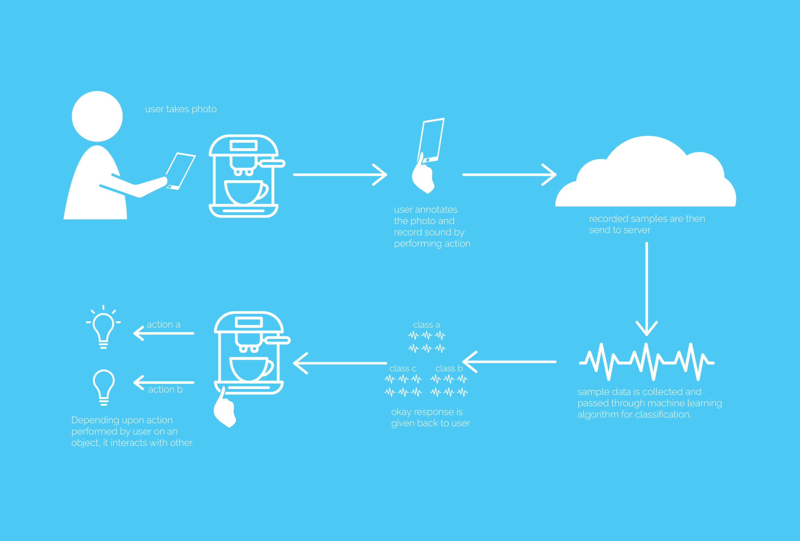

Sound Touch: When Everyday Things Talk to Each Other
Roots
One fine morning, in the diligent atmosphere of our FETLab, Dr. Daniel Ashbrook engaged me in a conversation about new horizons in the field of Internet of Things and endless possibilities in it. In the middle of discussion he stood up, turned on the coffee machine and placed the cup under the nozzle. As he turned coffee machine on, he realized there is no water. Habitually he refilled the water jar and resumed the process. While the coffeemaker was busy brewing, he dabbled in his iPhone for a few seconds and the music player came to life with some ambient music before he picked up his freshly brewed coffee and resumed our discussion. As the aroma of caffeine filled my senses, in a moment of inspiration I asked him if we could automate this process.
Elaborating it further I continued, what if he entered the lab and the lights turn on. As soon as lights are on, the coffee machine will start and no later does the coffee machine start, the music player will start playing music.
He liked the idea for following reasons:
- Automation
- Time Saver
- And he likes coffee ;-)
How to proceed?
Soon enough we finalized the idea and he was enthusiastic and kind enough to refer one of his previous research work on detecting type of material with the help of sound. He showed how detection of material is done by hitting the material with hammer and depending on the kind of sound made by material, it will be identified.
On the same principles, we simply replaced “material” with “object”(everyday things).
The sequence that comes into play is:
- Detect the sound made by object when user interacts with it.
- With the help of machine learning classify sound samples.
- Link one object with other object.

User Flow
Here is the first iteration of end to end user flow on how user will interact with mobile application.
Wireframes
Depending on the user flow I started sketching wireframes focusing more on functionality and layout. Here are the wire frames for all the three options of app.

Lessons Learnt
Once the wireframes were ready I did a quick pilot test with a user. The study was conducted in the lab and user was presented with paper wireframes and he has to presume as if it was a real app.
At the end of the study I was left with three unanswered questions:
- What if single photo does not capture the all the parts of an object?
- Why is the process of recording and linking action is in two different screens?
- What are the type of interactions that can be performed by user?
Let’s look at each question in detail.
- What if single photo does not capture the all the parts of an object?
- Why is the process of recording and linking action is in two different screens?
- What are the type of interactions that can be performed by user?
When the user started with tasks, for the initial screen he it was going smooth. As soon as he reached the screen where he has to take photo. He wanted to take a photo of a coffee machine. Now he was interested in taking a photo in such a way that that photo should capture on/off buttons, tray for placing cup and water filling chamber which was at the back of the machine. He was not able to capture all of this into single photo. So the solution for this was to let the user take more than one photo and once all the photos are finalized, system will create a collage in the next screen. Now user has all the sides of any object visible in the collage and can start annotating in the same collage.
This was a valid point where there was a scope for optimization. In the re-designed version there is only one screen where user enters the type of interaction and after that starts recording sound.
This was a very interesting question. When I started looking around me for what all type of interactions were possible I realized user can interact with anything. For example, user can slide curtain and it will make some noise. User can press button to turn on light and it will make a noise. This was quite interesting to me and right away I started with a research study to come up with a list of possible interaction user can make with an object. Also categorize the list by segregating it according to type of interaction.
Here are the artifacts:
After the general observation I came up with a list of 50 possible interactions user can make with everyday objects.
And after analyzing following are the type of interactions:
- Continuous: Sliding curtain makes a continuous noise.
- One State: Turning lights on/off makes same noise.
- Two State: On/off button on coffee machine makes two different noises.
Final Prototype
Poster